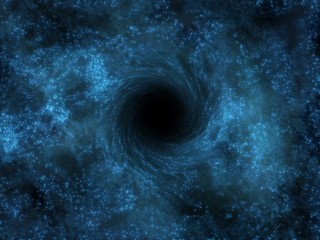
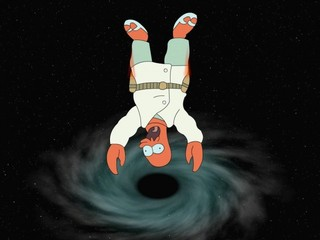
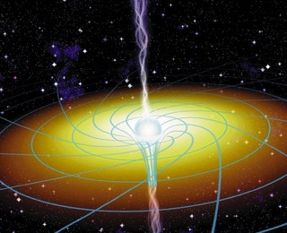
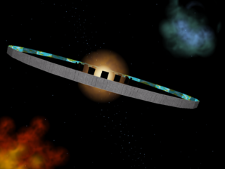
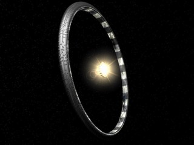
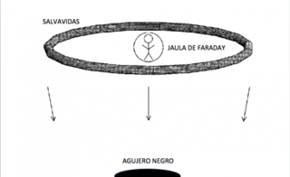
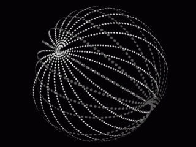

¿Se puede evitar el dolor cuando te precipitas hacia el centro de un agujero negro?
¿Se puede evitar el dolor cuando te precipitas hacia el centro de un agujero negro?
Quizá hayan sido la literatura y, sobre todo, el cine de ciencia ficción los responsables de la divulgación y enorme popularidad de que goza […] LeerLa entrada ¿Se puede evitar el dolor cuando te precipitas hacia el centro de un agujero negro? aparece primero en Naukas.
Related posts:
“Veremos el agujero negro del centro de nuestra galaxia recortado contra las estrellas”
“Fue como saltar desde un precipicio”
¿Y si la Tierra fuese atravesada por un agujero negro?

Quizá hayan sido la literatura y, sobre todo, el cine de ciencia ficción los responsables de la divulgación y enorme popularidad de que goza entre toda clase de público un concepto tan abstruso, en principio, hasta para los astrofísicos, como es el de agujero negro.
Desde multitud de películas hasta los largometrajes y series de TV como la longeva y mítica Star Trek, cuentan entre varios de sus episodios más recordadoscon la inestimable y emocionante ayuda de estos monstruos, en ocasiones de dimensiones microscópicas, otras veces de proporciones estelares o incluso galácticas, pero siempre con la misión de aportar el elemento de tensión imprescindible en toda trama que se precie y pretenda hacer las delicias de los aficionados al género.
Los extraños objetos que hoy en día conocemos como agujeros negros, denominación que se debe al físico estadounidense John A. Wheeler (1911-2008), quien lo acuñaría en 1969, lo eran ya en el siglo XVIII, gracias a los trabajos de John Michell (1724-1793) y Pierre Simon de Laplace (1794-1827). Estos dos personajes se habían planteado, prácticamente de forma simultánea, la posibilidad de que una estrella fuese lo suficientemente pesada y densa, con un campo gravitatorio tan intenso como para que la velocidad de escape en su superficie superase a la velocidad de la luz. Dichos objetos serían completamente negros y su radio dependía en proporción directa de su masa. Hasta 1969 el nombre con que se designaba a estas estrellas negras era “estrellas en colapso gravitatorio completo”.

Hubo que esperar hasta la formulación, en 1915, de la teoría de la relatividad general por parte de Albert Einstein (1879-1955) para que el concepto de agujero negro adquiriese un nuevo significado en el mundo de la física. En 1916, apenas un año después de su publicación, el físico y astrónomo alemánKarl Schwarzschild (1873-1916), sería el primero en encontrar la solución correspondiente a las ecuaciones de campo formuladas por el genio de Ulm.
La forma tradicional de resolver las ecuaciones de Einstein consiste en introducir en ellas la distribución particular de masa-energía (una estrella del tipo que sea: gigante roja, enana blanca, de neutrones, etc.; o también un planeta, agujero negro,…) y a continuación obtener la curvatura o deformación del espacio-tiempo a que da lugar.
Schwarzschild afrontó el problema de un objeto masivo, perfectamente esférico y estático (sin movimiento de rotación), pero halló que el mismo radio que habían obtenido Michell y Laplace coincidía ahora con el de una esfera imaginaria que rodearía a la estrella en colapso gravitacional. Concluyó que la luz no podría escapar de dicha esfera. En su honor, actualmente conocemos a este radio como radio de Schwarzschild. Por otra parte, la superficie de la esfera imaginaria representa aquella región suficientemente cercana al agujero negro como para que nada de lo que se encuentra en su interior se pueda resistir alenorme tirón gravitatorio y recibe el nombre de horizonte de sucesos o de eventos. Más aún, como hemos visto, dicho horizonte presenta una forma esférica y, justamente en su centro,la curvatura del espacio-tiempo es infinita, es decir, se encuentra lo que los físicos denominan una singularidad espacio-temporal.
Aunque al principio una gran parte de la comunidad científica, incluido el propio Schwarzschild, pensaba que los agujeros negros únicamente constituían soluciones matemáticas de las ecuaciones de la relatividad general, sin ninguna realidad física en correspondencia con objetos astronómicos reales, tras décadas de investigación, pocos son los que dudan de su existencia en la actualidad, gracias a las abundantes evidencias observacionales reunidas.
Una vez “demostrada” la realidad de los agujeros negros, los astrofísicos empezarona hacerse preguntas mucho más estimulantes, en ocasiones incluso extravagantes: ¿qué hay en el interior del horizonte de sucesos? ¿Son absolutamente negros los agujeros negros? ¿Es real la singularidad o tan sólo una consecuencia del fallo de la teoría en unas condiciones llevadas al límite? ¿Qué presenciaría un astronauta que se aventurase hacia la singularidad? ¿Qué sucedería a medida que se acercase cada vez más a la misma? Y muchas otras más.

Todas las cuestiones anteriores resultan de gran interés y pueden dar lugar a discusiones sobre temas tan sugerentes y variados como la gravedad cuántica (uno de los problemas más fundamentales a los que se enfrenta la física actual) o la radiación de Hawking (partículas subatómicas emitidas desde la frontera del horizonte de sucesos por los agujeros negros, que conducen, con el tiempo, a su “evaporación” y, por tanto, posterior desaparición). Sin embargo, quiero centrarme en esta ocasión en la última de ellas, la referente a lo que sucedería a un astronauta lo suficientemente osado como para intentar penetrar más allá del horizonte de sucesos de un agujero negro de Schwarzschild.
Multitud de textos y artículos divulgativos han abordado la problemática de la nave espacial que observa al astronauta en su caída desde una distancia segura y le ve precipitarse cada vez más despacio (a causa de la dilatación del tiempo con la intensidad del campo gravitatorio) al mismo tiempo que la luz recibida va experimentando una desviación hacia la parte del espectro electromagnético correspondiente a las longitudes de onda más largas, hasta desaparecer finalmente ante los ojos de la tripulación. Pero que el osado astronauta desaparezca de la vista no significa en absoluto que no siga ahí, con su periplo sin retorno. Una vez traspasada la frontera del horizonte de eventos, la suerte está echada… ¿o no?
Veamos, a medida que nuestro protagonista se precipita más y más hacia el centro del agujero negro, hacia la misteriosa singularidad, comienza a experimentar las demoledoras consecuencias de la intensa gravedad, los terribles efectos de marea.
En efecto, supongamos que el astronauta comienza a caer hacia el agujero negro y lo hace a lo largo de la dirección radial, con los pies por delante, por ejemplo (no, aún no es un cadáver, eso vendrá enseguida). La curvatura del espacio-tiempo es tan pronunciada que la fuerza experimentada por los pies es mucho mayor que la experimentada por la cabeza, a pesar de estar separadas ambas partes del cuerpo por apenas unas cuantas decenas de centímetros (en campos gravitatorios poco intensos, como el de la Tierra, pongamos por caso, esta diferencia resulta insignificante). De hecho, dichas fuerzas (dirigidas a lo largo de la línea que une los pies con la cabeza) varían inversamente con el cubo de la distancia al centro del agujero negro, con lo que crecerán muy rápidamente a medida que nos acerquemos a él.
Algo completamente análogo ocurre también en las otras dos direcciones perpendiculares (aunque son un 50% menos intensas que las primeras), es decir, a la distancia entre los hombros y a la distancia entre el pecho y la espalda. La consecuencia de todo esto es que el cuerpo se estirará a lo largo de su longitud y, al mismo tiempo, se encogerá en las otras dos direcciones hasta límites insospechados, provocando finalmente el desmembramiento total. A estefenómeno se le conoce popularmente en la literatura de agujeros negros como “espaguetización” o “espaguetificación”.
De hecho, efectos sumamente desagradables comienzan a manifestarse a partir del momento en que las fuerzas de marea superan, aproximadamente, en un factor diez el peso del astronauta (este es el límite, más o menos, que soportan los pilotos de combate a bordo de sus aviones), lo que sucede para agujeros negros con masas inferiores a unas 13800 masas solares o, equivalentemente, con radios de Schwarzschild (tamaños del horizonte de eventos) por debajo de 40000 km.
La buena noticia es que el sufrimiento que experimentará el astronauta, desde el instante en que alcanza la distancia crítica para la que los efectos de marea comienzan a ser insoportables hasta que se precipita sobre la singularidad, no se prolongará durante más de 90 milésimas de segundo, según los cálculos estimativos para una persona con una estatura de 1,80 metros (independientemente de la masa del agujero negro).
A la vista del resultado anterior, no parece que se pueda hacer mucho por la vida del infortunado viajero. No obstante, puede que aún reste una posibilidad. Tomad un respiro, inspirad profundamente, expulsad el aire y seguid leyendo un poco más. Después, podréis opinar.
Veamos, el problema al que nos enfrentamos es serio, realmente serio y hay que empezar por admitirlo. Desde que la gravedad supera el valor crítico anteriormente aludido hasta alcanzar finalmente la singularidad, haya lo que haya allí, apenas disponemos de escasamente una décima de segundo (en tiempo propio del astronauta, es decir, el que marca un reloj que él llevase consigo que, como ya advertimos anteriormente, es distinto que para un observador externo). ¿Cabría la posibilidad, por remota que fuere, de reducir este tiempo, aliviando parte del sufrimiento del viajero? Pues bien, la respuesta es sí.
Recordad que el agujero negro tira con más fuerza de los pies que de la cabeza, estirando y deformando el cuerpo del astronauta a lo largo de su longitud. Además, lo comprime en las otras dimensiones haciendo que los hombros tiendan a juntarse, al igual que tórax y espalda. Entonces, ¿no podríamos diseñar una estructura que compensase todos estos efectos perniciosos?
En agosto de 2003, los astrofísicos J. Richard Gott, de la Princeton University, y Deborah Freedman, de Harvard, encontraron una solución al dilema. Se les ocurrió que sería posible construir una especie de salvavidas gravitatorio, un dispositivo similar a un flotador como el que usan los niños en la playa. Disponiéndolo alrededor de la cintura del astronauta y con untamaño y masa apropiados generaría su propia gravedad.

El salvavidas constaría de cuatro anillos más delgados, cada uno de ellos con la cuarta parte de la masa total, concéntricos dos a dos (con radios ligeramente distintos) y situado un par justamente encima del otro, también a corta distancia. Con esta disposición, el campo gravitatorio que produce la misma estructura ejercerá, debido a su simetría particular, fuerzas opuestas sobre cada hombro y hacia afuera en la dirección radial, tendiendo a alejarlos entre sí. Lo mismo ocurriría con las partes delantera y trasera del cuerpo. En cambio, a lo largo de la línea que une los pies con la cabeza sucedería todo lo contrario, es decir, los anillos tirarían, respectivamente, hacia arriba de los primeros y hacia abajo de la segunda, acercándolos entre sí y compensando así el estiramiento producido por el agujero negro.
Gott y Freedman encontraron que resultaría suficiente con que el radio del salvavidas gravitatorio disminuyese proporcionalmente con la distancia a la singularidad. A medida que el astronauta se aproximase más y más al centro del agujero negro, los anillos se irían estrechando, acercándose a la cintura de aquél.
Sin embargo, aún restaban algunas dificultades. La primera y más seria era la que tenía que ver con el propio peso del salvavidas y que provocaría su colapso sin remedio. La solución propuesta por los dos astrofísicos consistiría en dotar a los anillos con una carga eléctrica positiva de una magnitud idéntica a su masa, de tal manera que la atracción gravitatoria se cancelase exactamente con la repulsión electrostática (tened en cuenta que, tanto la ley de Coulomb como la ley de la gravitación de Newton, ambas afirman que las fuerzas de interacción eléctrica y gravitatoria varían en proporción directa a las cargas y masas, respectivamente, y en proporción inversa con el cuadrado de la distancia; así, si la carga y la masa son idénticas en magnitud, las fuerzas eléctrica y gravitatoria también).

En segundo lugar, y derivado de todo lo expuesto en el párrafo anterior, se encuentra el problema del intenso campo eléctrico producido ahora por el salvavidas cargado y que afectaría gravemente a la integridad del astronauta (si pretendemos prolongar su vida mientras cae al agujero negro, no le matemos con el salvavidas; sería una contradicción doble). Así pues, éste debería estar encerrado y protegido en el interior de una estructura esférica hecha a base de un material conductor de la electricidad (un metal, por ejemplo) y de un tamaño similar al de su ocupante.
Una estructura como ésta se denomina jaula de Faraday y su funcionamiento está basado en la imposibilidad de los campos eléctricos para penetrar en su interior. Las jaulas de Faraday son empleadas a diario en la protección de toda clase de dispositivos electrónicos delicados frente a picos de intensidad de corriente eléctrica inesperados, por ejemplo. Debido a su tamaño, relativamente pequeño en comparación con las dimensiones de los anillos que conforman el salvavidas gravitatorio, la jaula no perturbaría apenas el efecto de éste sobre el astronauta.
Pinche aquí para ver el vídeo
Pinche aquí para ver el vídeo
El tercer y “último” contratiempo también guarda relación con el intenso campo eléctrico generado por el salvavidas cargado. En efecto, tal y como predijo en 1951 Julian Schwinger (1918-1994), Premio Nobel de Física en 1965, junto a Richard Feynman y Shinichiro Tomonaga, por sus contribuciones en el campo de la electrodinámica cuántica, un enorme campo eléctrico daría lugar a la generación de pares de partículas y antipartículas, en concreto, electrones y sus contrapartidas, los positrones.
Este efecto, conocido como efecto Schwinger, haría que los anillos del salvavidas (recordad que estaban cargados positivamente) repeliesen, por un lado, a los positrones (que también poseen carga eléctrica positiva) haciéndolos escapar y, por otro, atrapasen a los electrones (dotados con carga negativa), con lo que el salvavidas se iría descargando paulatinamente, pudiendo colapsar nuevamente a causa de su propio campo gravitatorio. La escala temporal en que tiene lugar la descarga depende tanto del tamaño de los anillos como de sus masas y, por tanto, conviene hacer que sea siempre superior al tiempo empleado por el astronauta en alcanzar la singularidad.

Gott y Freedman encontraron que los tres problemas expuestos más arriba quedarían subsanados empleando un salvavidas gravitatorio con una masa de 12800 billones de toneladas (comparable a la de un asteroide mediano) y un diámetro de 56,94 metros. La estructura sería capaz de hacer soportables fuerzas de marea de hasta 67600 veces el peso del astronauta. Con ello, el lapso de tiempo comprendido entre el comienzo de los efectos intolerables y la llegada a la singularidad central se reduciría en casi un factor 26, de las consabidas 90 milésimas de segundo hasta unas 3,46 nada más. Por su parte, la descarga de los anillos por creación de pares electrón-positrón emplearía 1,3 segundos y resultaría irrelevante.
En esas poco más de 3 milésimas de segundo, el efecto Schwinger predice la aparición de 15 cuatrillones de pares electrón-positrón. El papel de la jaula de Faraday sería decisivo en esta situación de bombardeo constante sobre el astronauta. En cambio, si la masa del salvavidas se redujese hasta los 5650 billones de toneladas y su diámetro hasta 48,32 metros, entonces el tiempo de caída en la singularidad se prolongaría ligeramente hasta las 4,08 milésimas de segundo, pero ahora con la ventaja añadida de que apenas si habría tiempo de que se crease una cantidad significativa de pares electrón-positrón antes de que el astronauta alcanzase el centro del agujero negro.
Es más, con toda seguridad el astronauta ni se daría cuenta de lo que le habría matado, ya que en ese intervalo de tiempo tan reducido, los impulsos nerviosos que transmitirían la señal de dolor al cerebro no llegarían, como es bien sabido desde que en 1849 Emil du Bois-Reymond desarrollase el primer galvanómetro capaz de medir la corriente eléctrica de la actividad muscular y, al año siguiente, Hermann von Helmholtz demostrase que la electricidad viajaba por los nervios de las ranas a velocidades comprendidas entre unos pocos y algunas decenas de metros por segundo, prácticamente igual que en los seres humanos.

Finalmente, de todo lo aprendido hasta aquí se pueden extraer algunas conclusiones que pueden resultar de gran utilidad:
- En caso de querer emprender una expedición hacia el interior de un agujero negro, la postura corporal más adecuada sería la consistente en adoptar la posición fetal, pero con la línea que une los hombros situada en la dirección radial, dirigida hacia la singularidad, lo que proporcionaría un “tiempo de sufrimiento” de 45,5 milésimas de segundo (prácticamente la mitad que en el primer caso, sin salvavidas). Así, con un salvavidas gravitatorio de tan sólo 14,28 metros de diámetro a la distancia de seguridad y con una masa de 833 billones de toneladas la mejora se reduciría hasta solamente 1,75 milésimas de segundo.
- Podría suceder que nos aventurásemos, accidentalmente o no, en una región inexplorada del espacio donde las fuerzas de marea resultasen desconocidas. En tal caso, lo más sensato sería ir equipado con un salvavidas en forma de cáscara o corteza esférica hueca y también cargado eléctricamente con una carga igual a su masa (exactamente como procedíamos en el caso de los anillos para un agujero negro de Schwarzschild) de tal forma que se pudiesen ajustar automáticamente los radios de los distintos anillos que conforman la cáscara según fuesen las distintas curvaturas espacio-temporales con que nos fuésemos encontrando.
- Un análisis similar al realizado hasta ahora podría extenderse al caso de agujeros negros mas realistas, los dotados de movimiento de rotación, también conocidos como agujeros negros de Kerr, en honor al matemático neozelandés Roy Kerr (1934-). Estos agujeros negros no presentan una singularidad puntual en su centro, sino en forma de anillo delgado. Gott y Freedman han especulado con que una variante de su salvavidas gravitatorio anular podría acaso permitir al astronauta sobrevivir durante un tiempo suficiente como para atravesar la singularidad y llegar quizá hasta…
EPÍLOGO
Puede que los lectores del artículo anterior se sientan inclinados a pensar que el problema analizado, así como la solución propuesta, tan sólo presentan un interés meramente académico, sin ninguna posibilidad de constituir una contribución real y práctica a las potenciales misiones espaciales futuras al interior de un agujero negro también real, donde un astronauta se encontraría amenazado por una serie innumerable de peligros, seguramente insalvables, que quizá dejaría en poco menos que ridícula la preocupación por el diseño y construcción de un dispositivo como el descrito en las páginas anteriores. Precisamente, en este sentido se han manifestado no pocos colegas de los autores del trabajo original, Gott y Freedman.
No obstante, la historia de la ciencia, en general, y de la física, en particular, nos han enseñado en multitud de ocasiones que de una cuestión, en principio, banal u ociosa puede llegar algún día a surgir todo un vasto campo de investigación sin sembrar y que, con el paso de los años, proporcione una fructífera cosecha. Al fin y al cabo, la ciencia ha avanzado y avanza gracias a los locos que siempre han comprendido que el horizonte está en los ojos, nunca en la realidad.
Fuentes y referencias
-
A Black Hole Life Preserver, J. Richard Gott and Deborah Freedman. http://arxiv.org/abs/astro-ph/0308325v1
-
Einstein versus Predator, Sergio L. Palacios. Robinbook, 2011.
-
How to Destroy the Universe and 34 Other Really Interesting Uses of Physics, Paul Parsons. Quercus Books, 2011.
La entrada ¿Se puede evitar el dolor cuando te precipitas hacia el centro de un agujero negro? aparece primero en Naukas.
Related posts:
- “Veremos el agujero negro del centro de nuestra galaxia recortado contra las estrellas”
- “Fue como saltar desde un precipicio”
- ¿Y si la Tierra fuese atravesada por un agujero negro?